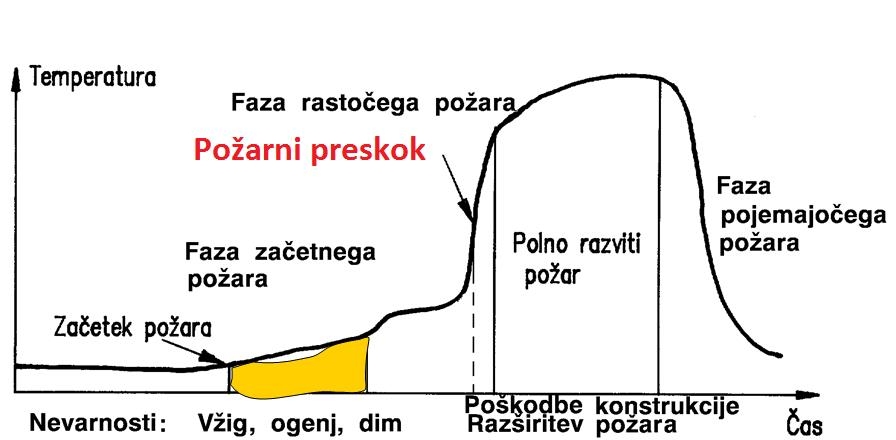
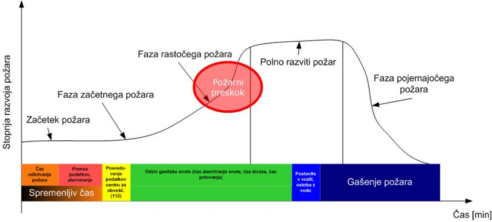
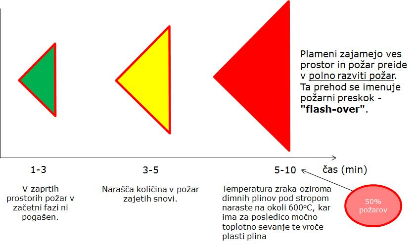
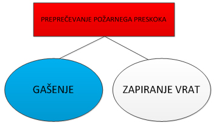
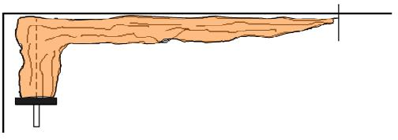
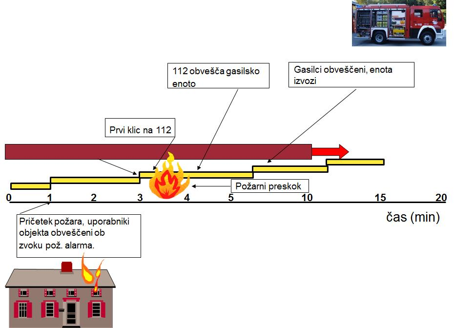

Razvoj požara
Ko se sklenejo elementi požarnega trikotnika, lahko gorenje napreduje izredno hitro. Od vžiga naprej:
- se lahko gorenje širi na sosednje gorljive snovi in preide v polno razviti požar
- lahko gorenje preneha, ko pogori začetno gorivo
- lahko gorenje preneha, ko zanj zmanjka zraka – raven kisika pade pod 15 do 17 volumskih odstotkov. Ob tem preneha zgorevanje s plamenom, nadaljuje pa se zgorevanje z žarjenjem. Gorenje je počasnejše, ugasne lahko tudi samo od sebe
Lastnost požara opisujejo požarne krivulje, ki po navadi prikazujejo razmerje med časom in hitrostjo sproščanja toplote.

Slika 6: Požarna krivulja
Požarno krivuljo sestavlja več faz, kamor prištevamo vžig, čas pred požarnim preskokom, požarni preskok, čas po požarnem preskoku in fazo upadanja požara.
Požarna krivulja: vžig
Za vžig je potrebna prisotnost goriva, kisika in vira vžiga. Zagorelo ne bo, če bo stik med gorivom in virom vžiga ob zadostni koncentraciji kisika takšen, da se temperatura v gorivu ne bo dvignila do temperature, potrebne za vžig. Les se vžge pri približno 250 oC, ki je hkrati tudi temperatura, kjer se lahko začnejo vžigati nekatere plastične mase. Z vidika požarne preventive je pomembno, kdaj in kako se lahko vžgejo gorljive snovi. Če vemo, kdaj in kako se nekaj vžge, lahko lažje načrtujemo preventivne ukrepe. Med možne vire vžiga prištevamo tudi eksplozije in potrese. Nekatere snovi se lahko vžgejo tudi brez zunanjega vira vžiga. Pojav imenujemo samovžig.
Požarna krivulja: čas pred požarnim preskokom
Požar lahko v začetni fazi sprošča veliko dima ali pa se pojavlja z močnim plamenom. Upoštevanje začetne faze je pomembno pri načrtovanju sistemov za odkrivanje požara. Dim pri požaru z dolgo začetno fazo sproščanja dima se lahko izredno hitro razširi preko meje nastanka požara. Dim, ki nastaja pri gorenju, je za ljudi še bolj nevaren kot toplota. Statistični podatki kažejo, da v požaru zaradi dima umre med 50 in 60 odstotki ljudi. Požar lahko dolgo ni odkrit, če objekt ni opremljen z javljalniki ali pa ti niso prilagojeni pričakovanemu požaru. Začetno gorenje v kuhinji, ko se zaradi nepazljivosti v ponvi vžge olje, se lahko razširi na kuhinjsko napo, od tam pa na kuhinjske elemente. Od vžiga olja v ponvi do požara, ki je polno razvit, lahko mine le nekaj minut.
Požarna krivulja: požarni preskok
Ključna in najbolj pomembna faza pri razvoju požara je požarni preskok ali s tujko »flashover«. To je pojav, kjer količina toplote, ki se sprošča, v trenutku zelo naraste. Požarni preskok nastane, ko temperatura vroče plasti pod stropom doseže ali preseže 600 oC. To je zadostni pogoj, da iz večine gorljivih trdnih snovi izhajajo vnetljivi plini, ki se ob požarnem preskoku vžgejo. Neposredno pred požarnim preskokom so namreč prostor in gorljive snovi tako segreti, da iz njih izhajajo vnetljivi plini. Materiali začnejo razpadati. Med vnetljivimi plini prevladujejo metan, vodik in ogljikov monoksid.

Slika 7: Prikaz faze požarnega preskoka na požarni krivulji
Po razpoložljivih podatkih lahko približno pri 50 odstotkih požarov v objektih požarni preskok nastane v petih minutah. Za začetno gašenje požara v prostoru je sorazmerno malo časa. V eni minuti lahko vžig papirja v košu za smeti preide na pisalno mizo v bližini. Nepogašen požar se razvija naprej in možen je pojav požarnega preskoka.

Slika 8: Časovna odvisnost razvoja požara
Za razvoj požara po požarnem preskoku velja, da je požar polno razvit. To otežuje varen umik iz prostora/objekta oziroma oteži evakuacijo in vpliva na gradbeno konstrukcijo objekta. Požarni preskok lahko preprečimo s hitrim gašenjem začetnega požara z ustreznim gasilnikom, požarno odejo ali notranjim hidrantom. Če se požara ne da pogasiti, je potrebna takojšnja evakuacija iz objekta, vrata prostora, kjer gori, pa je treba zapreti.

Slika 9: Ukrepi za preprečevanje požarnega preskoka
Požarni preskok bo nastal prej, če bo strop nižji oziroma bo strop oblečen v gorljiv material (lesen opaž na stropu, dekorativne plastične obloge na stenah in stropu ipd.). Plamen se ob stiku s stropom ukloni. Nižje ko je strop, prej se plamen ukloni. To seveda pomeni, da se hitreje segrevajo zrak pod stropom in druge gorljive snovi, ki so na stropu. Plamen ima namreč vsaj 1000 oC, pri tej temperaturi pa se hitro vžgejo vsi gorljivi materiali.

Slika 10: Plamen se pod stropom ukloni
Pojav požarnega preskoka je pomemben tudi pri določitvi časa, potrebnega za evakuacijo. Evakuacija in reševanje v objektu sta neposredno po požarnem preskoku izredno nevarna. Pri poznavanju in analizi pojma požarni preskok je pomemben čas, ki ga potrebuje požar, do faze, ko je polno razvit. V začetku, ko je goreče površine do največ en m2, je požar še mogoče pogasiti z gasilnikom ali notranjim hidrantom. Kasneje lahko požar pogasijo le gasilci.
Na čas prihoda gasilcev vpliva več dejavnikov, kot so:
- čas zaznavanja požara
- čas javljanja o požaru v center za obveščanje (na telefonsko številko 112)
- kategorija gasilske enote (predpisi glede na kategorijo gasilske enote določajo izvozne čase enot)
- oddaljenost enote od objekta
- dostopnost do objekta
- oskrba z vodo...

Slika 11: Odziv gasilske enote
Za večino požarov v prostorih velja, da je gasilska enota v objektu v fazi, ko je požar že polno razvit. To pomeni, da sta varnost ljudi v objektu in varnost premoženja odvisna od organizacije v podjetju, predvsem od ljudi, odgovornih za gašenje začetnih požarov in evakuacijo.
Požarna krivulja: čas po požarnem preskoku
Pri določenih pogojih (omejena količina zraka, velik prostor) do pojava požarnega preskoka v prostoru ne bo prišlo. Izkušnje kažejo, da požarni preskok uspešno preprečujejo veliki prostori in omejena razpoložljivost zraka za gorenje. Razvoj požara bo dosegel konico ali fazo enakomernega gorenja. Po drugi strani je pričakovati v prostoru požarni preskok in požar, ki bo zajel celoten prostor. Pogosto se bo požar ob takšnih razmerah razširil tudi na sosednje prostore. Trajanje in razvoj enakomernega požara sta odvisna od količine goriva in prezračevanja v prostoru.
Požarna krivulja: upadanje požara
Požar bo po določenem času pojenjal in sam ugasnil. Zmanjšanje požara povzročijo poraba goriva, zmanjšanje stopnje prezračevanja oziroma količine zraka, potrebne za gorenje, in ročno ali avtomatsko gašenje. Jakost požara se zmanjša, ko pogori ca. 80 odstotkov vseh gorljivih snovi v prostoru.